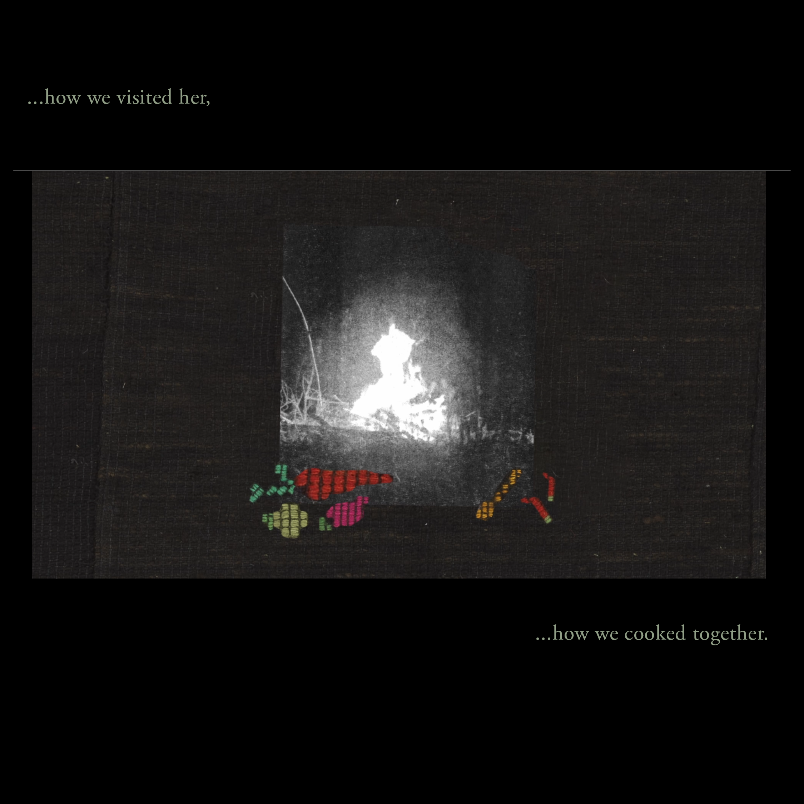
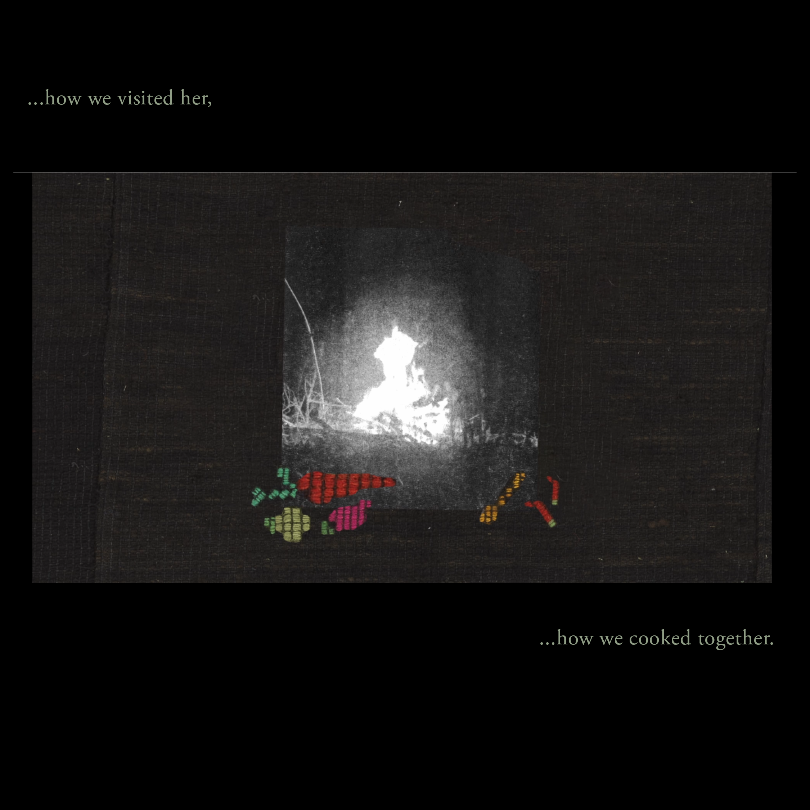

The Blanket
2024
Animated Short
ERM | Estonian National Museum: Finno-Ugric Film Festical screening
OKO Film Festival: Competition section | International Competition: Short Films | Ukraine, Bulgaria
AnimaDoc Film Festival: Screening | Poland
Samizdat Eastern European Film Festival: Short Film Competition | Centre for Contemporary Arts Glasgow | Scotland, UK
The Blanket is an animated short film centered around an
ethnographic exhibition piece owned by Natalia, a native of the
Udmurt Republic, who now works at the Estonian National Museum.
Natalia shares her experience of seeing museum exhibits that once
belonged to someone she knew, highlighting the deep connections
between memory, materiality, and cultural identity. The story
delves into the interplay between the lifelessness of artifacts
and the living stories they embody, challenging the perceived
dichotomy between objects and the memories they hold.
The Blanket was co-directed and animated with filmmaker and
director Karl Kaisel. The film was made in 48 hours as part of the
Experimental Film Lab at Finno-Ugric Film Festival at Estonian
National museum. The theme of the festival is
Forgotten People. In total seven teams were selected for
the experimental Film Lab to work with Finno-Ugric language
speakers. We had the luck to get in contact with Natalia who is
Udmurt, and works in the National Museum of Estonia. As we
explored the Finno-Ugric exhibition she revealed that multiple
objects on the display were donated by her and belonged to her
family members. Through interviews and conversations with Natalia
we learned her family history but also her philosophy about museum
objects and the possibility of learning her culture through these
objects.
The question was - what does it mean to be forgotten?
Looking at the lost and future narratives - from the museum pieces
to contemporary objects and people who use them. Each becoming a
carrier for a story with a fleeting presence and meaning inscribed
to them. What kind of stories will the object of our every day
tell to the future generations? Can they piece together form a
coherent narrative? There's a paradox in preservation: does
materiality immortalise or trap the narrative? What remains when
memory fades, and artefacts crumble? Can the past be brought to
life through the fragments of the present? What emerges from this
recreation? Is it always going to be a crude representation of
what once was or is there possibility for something meaningful?
Directed and animated by Regina Vitányi and Karl Kaisel.
Produced by Edina Csüllög and Timár Bogáta.
 


REGINA VITÁNYI
2020